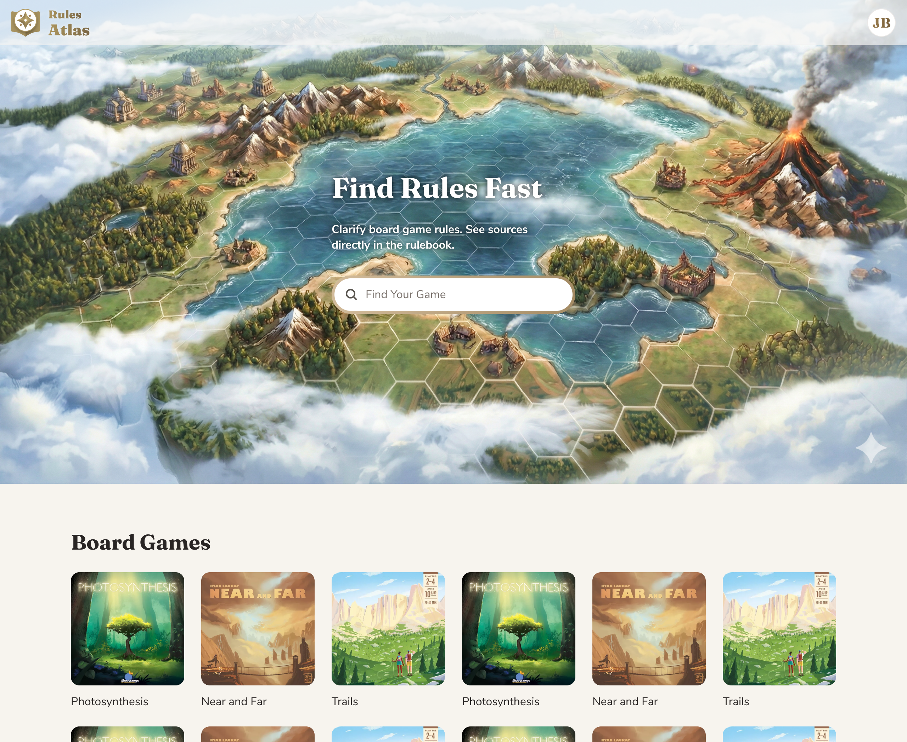
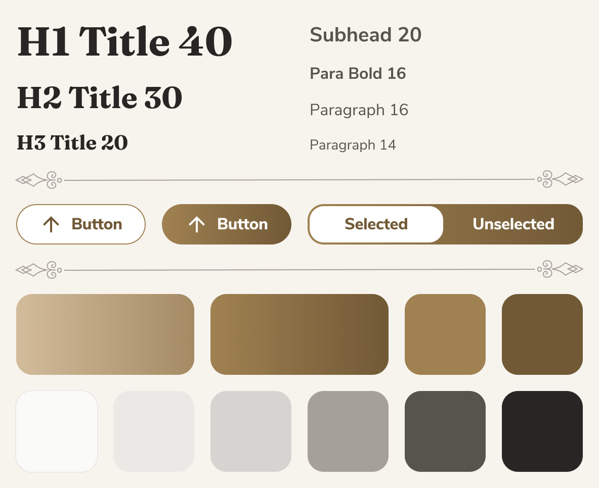
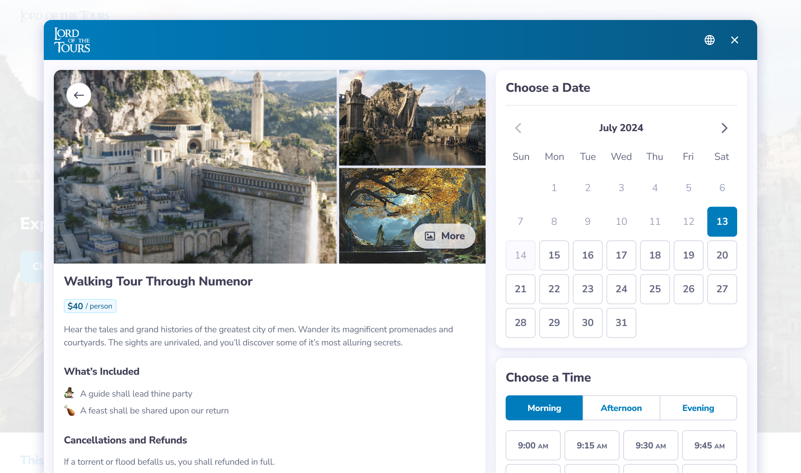

Rules Atlas

Overview
A side project to practice agentic coding and scratch my own itch.
The Problem
Modern board games often require rules clarification. Finding answers is slow and disruptive, forcing players to dig through 20–40-page rulebooks mid-game.
The Goal
An AI tool that quickly clarifies board game rules.
Stack


Research
Testing “Competitors”
I tested several AI rulebook clarification tools. They all used RAG through a standard chat interface. When they returned an answer, I inevitably wondered, “Is that correct?” It only took a few tests to spot a wrong answer and lose all trust in the tool.
What Users Are Saying
I read through BoardGameGeek forums about AI rule clarification, and the take was consistent: players need certainty, and RAG-based rule clarification wasn’t trustworthy enough.
Building
Flipping the Design Process
Since I was coding with AI, I flipped the design process on its head. My biggest unknown wasn’t the design—it was whether I could even vibe-code certain key features. Before I designed anything, I used Cursor to build a bare-bones v0.
Solution: Verifiable RAG
I created an AI interface that gave answers users could quickly verify. Alongside the RAG chat, an adjacent Rulebook Viewer jumps to the relevant rulebook page, so users can confirm the answer.
The Edge of Vibe Coding
Initially, I hoped to highlight the exact quote in the rulebook, but it was too technically difficult to vibe-code and would have to wait for a future version, or a real coder.
The RAG Pipeline
Using Cursor, I built an upload flow: it sends each rulebook PDF to its own OpenAI Vector Store via the API. Then I created a chat interface that uses ChatGPT 5.1 to query those Vector Stores for answers about each game. However, I ran into hallucination issues, just like with my “competitors”.
Why did uploading PDFs to OpenAI’s vector stores produce such unreliable answers?
After digging in, I learned why: the vectorization process was scanning pages left-to-right across the entire page. Most rulebooks use multi-column layouts, causing text to interleave and confuse the model. This is likely why my “competitors” were so unreliable.
AI Orchestation
To fix this, I used Gemini 2.5 Flash to clean the PDFs during the Upload flow. Before ingestion to OpenAI, Gemini 2.5 Flash reads PDFs as visual documents, and converts each page to clean text with section headers tagged. This allowed OpenAI to quote the exact section each quote came from, and it's responses became 100% accurate!
Now that the core flow was working, I shifted to design.
Design
This project focused on AI coding, so I won't cover the design process in detail.
Visual Design
I used Figma to mock up the main pages and compare different fonts, color palettes, page layouts, and other visual design choices.
My goal was to convey authority and trust, so the visual design leans established rather than AI-forward. Serif headers and a paper-and-brass color palette evoke printed rulebooks, shifting attention from AI to the authority of the source.

Frontend
I handled styling using Tailwind CSS (colors, radius, typography). I started from shadcn-style components (buttons, inputs, etc.) and created a hidden /ui page that acted as a component sandbox—showing all components, variants, text styles, and colors in one place.
Branding
With the name and logo, I tried to convey “authoritative” and “comprehensive” to match the product’s promise.
Vibe Coding Learnings
As a product designer with a high-level understanding of code, vibe coding still feels like flying blind. While much of the code was unfamiliar, I did learn some tricks to get better results.
Rules and Documentation
Clear constraints matter. I added User Rules in Cursor, such as:
Code: Small functions, early returns, explicit types
Dependencies: Use existing libraries; suggest new ones only if they meaningfully reduce complexity.
I also ensured coding agents referenced two key context files:
README.md — a minimal "how to run it" checklist
-
AGENTS.md — included context such as:
Critical rules: e.g. "Use gpt-5.1 for Ask"
Architecture map: Repo + feature index
Tech stack: Choices and hard deployment constraints
Data-flow diagrams: Upload, Ask, and ingestion flows
Prompting Techniques
For simple changes: Cursor’s Composer model was fastest and most token-efficient.
For complex changes: First, I used ChatGPT 5.2 to improve my prompt, then Cursor's Plan mode to generate a PM-style spec, then Opus 4.5 to build it.
Debugging and Version Control
Errors are the norm. If a few rounds of telling Opus 4.5 to debug didn't work, I could always roll back to the last stable version in GitHub.
Solution
Try ItNext Case Study

Booking Experience Revamp
Wireframes
Prototyping
Usability Testing
A/B Testing
Design Systems
